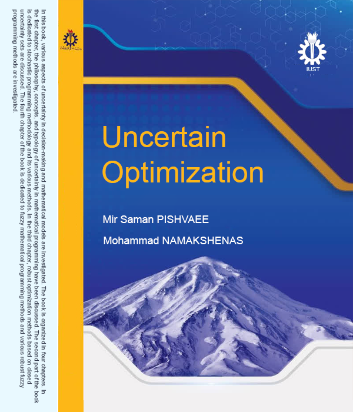

To stay robust, embrace the unknown.

In this book, various aspects of uncertainty in decision-making and mathematical models are investigated. The book is organized in four chapters. In the first chapter, the philosophy, concepts, and typology of uncertainty in mathematical programming have been discussed. The second part of the book is dedicated to stochastic programming methodology and its various methods. In the third chapter, robust optimization methods based on closed uncertainty sets are discussed. The fourth chapter of the book is dedicated to fuzzy mathematical programming methods and various robust fuzzy programming methods are investigated.